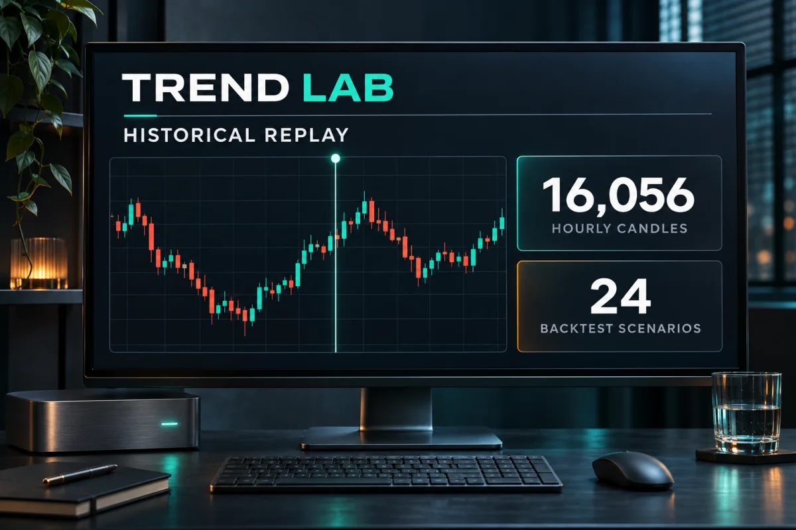

Personal project · Trading automation
Trend Lab
I built a trading bot and backtesting dashboard to replay historical crypto futures data and see how signals, execution costs, and risk limits affected simulated trades.

- Role
- Designed and built the simulator, dashboard, and research tools
- Stack
- JavaScript, Node.js, Lightweight Charts
- Market data
- ETH/USDT perpetual futures · December 2024 to September 2026
From market data to simulated trades
I used public historical candles, mark prices, and funding records. The replay only feeds the strategy candles that have already closed at the selected time. A moving average crossover generates a signal, and the simulator models entry at the next candle’s open.
I wrote automated checks for look-ahead bias, execution order, minimum trade sizes, and how costs reconcile with the simulated account balance.
What the backtests showed
The published study combined four evaluation periods, three levels of risk per trade, and two cost models. In the January to September 2026 window, one configuration that risked 1% per trade ended 4.08% below its starting balance after modeled costs.
I kept that result alongside the other scenarios in the research archive. The simulator used historical data and simulated orders throughout the study.